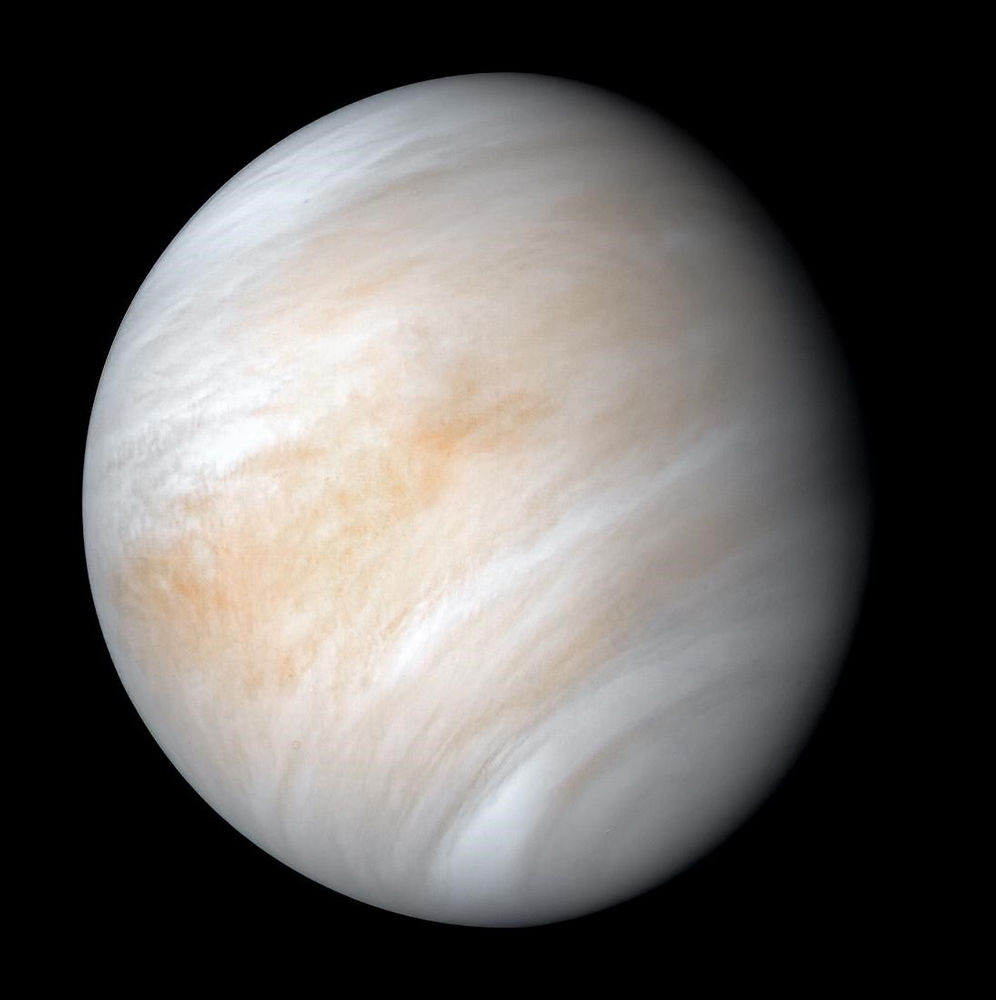

Overview
Venus is the second planet from the sun and is often referred to as Earth's "sister planet" due to its similar size and composition. However, Venus has a very different climate and atmospheric conditions compared to Earth, with a thick atmosphere mostly composed of carbon dioxide and extreme temperatures that can reach up to 864 degrees Fahrenheit (462 degrees Celsius) on its surface. The extreme conditions on Venus make it a challenging target for exploration, but several missions have been launched to study this planet over the years.
Composition
Venus has a rocky, terrestrial composition similar to Earth, with a dense iron core at its center, surrounded by a mantle of silicate rock. The crust of Venus is thought to be between 20 to 30 kilometers thick, and its surface is dominated by volcanic features such as mountains, lava flows, and vast plains of basaltic rock. Venus has a thick atmosphere made up mostly of carbon dioxide, with small amounts of nitrogen, sulfur dioxide, and trace amounts of other gases.
Orbit
Venus orbits the sun at an average distance of 108.2 million kilometers (67.2 million miles), completing one orbit every 224.7 Earth days. Venus rotates on its axis very slowly, taking 243 Earth days to complete one rotation, and its rotational axis is tilted by only 2.64 degrees. This slow rotation, combined with its thick atmosphere, creates a strong greenhouse effect that traps heat and makes Venus the hottest planet in our solar system.
Exploration
Venus has been the subject of numerous missions over the years, starting with NASA's Mariner 2 in 1962, which was the first successful mission to Venus. Other notable missions include the Soviet Union's Venera series of landers, which successfully sent several probes to the surface of Venus in the 1970s and 1980s, and NASA's Magellan mission, which used radar to map the surface of Venus in the 1990s.
More recently, the European Space Agency's Venus Express mission (2005-2014) studied Venus's atmosphere and climate, while Japan's Akatsuki spacecraft (launched in 2010) is currently in orbit around Venus studying its atmospheric dynamics and weather patterns. NASA has also announced plans for two new missions to Venus, including the VERITAS orbiter, which will study the planet's geology, and the DAVINCI+ mission, which will send a probe to study the planet's atmosphere and surface.